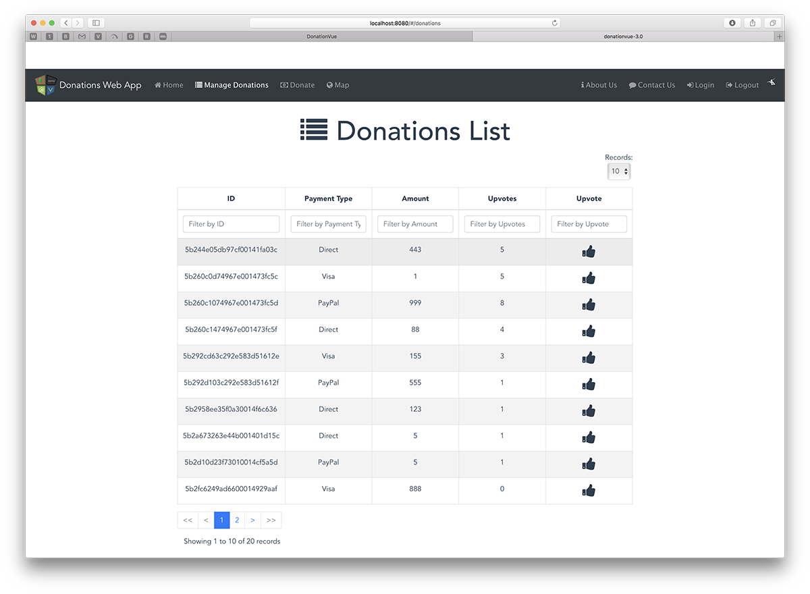
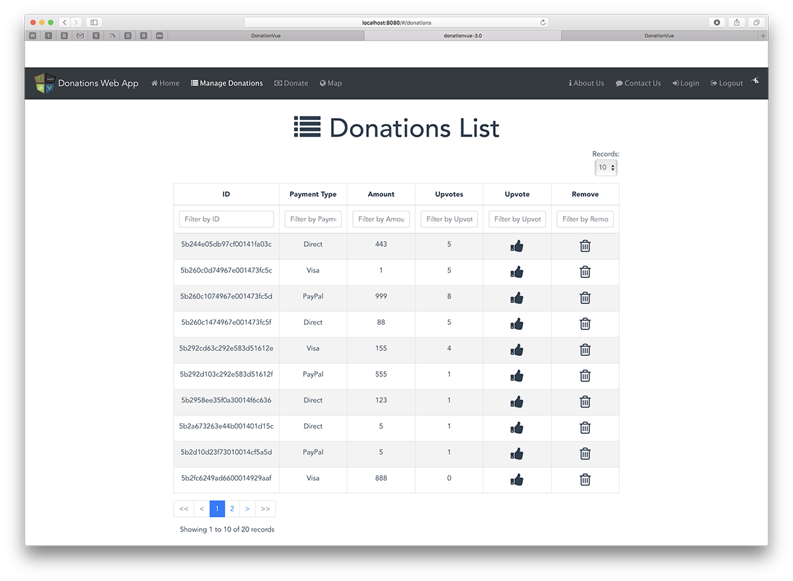
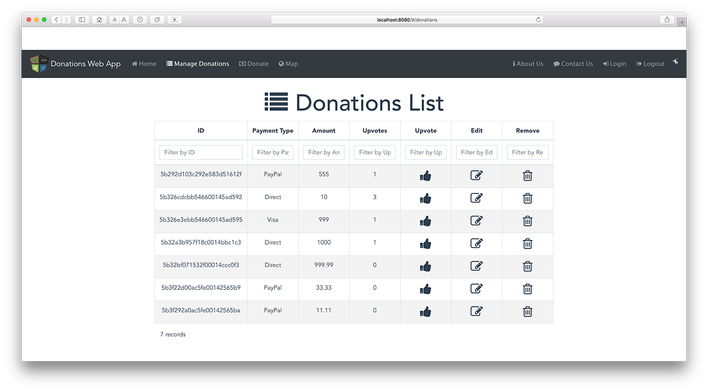
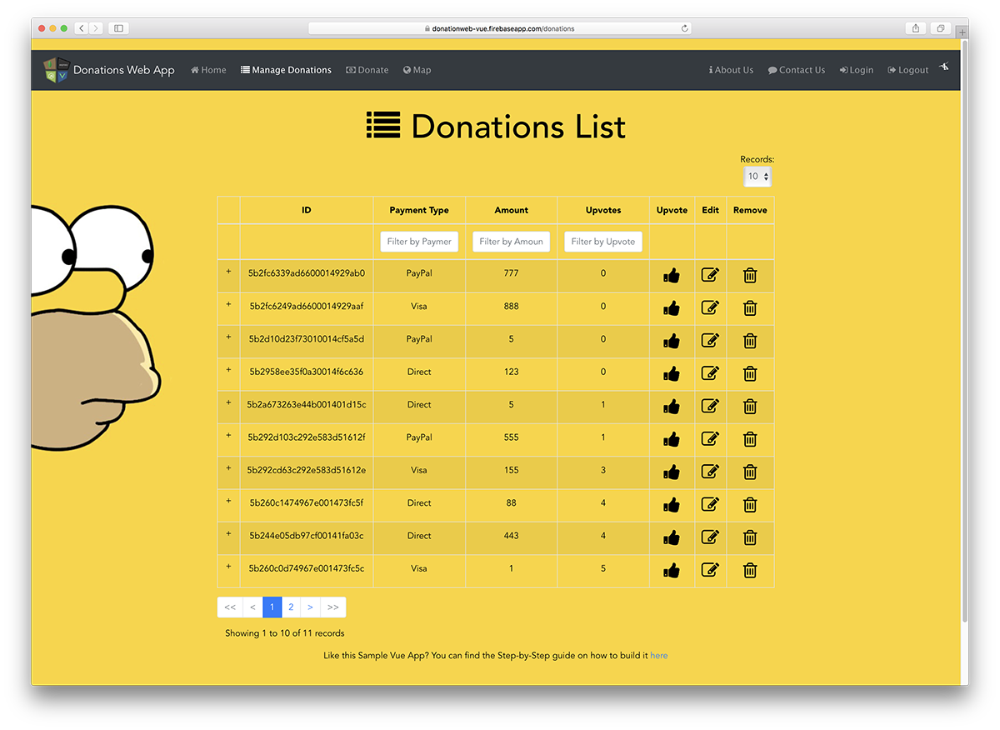

This lab involves adding more functionality to our Vue Web App - DonationVue-3.0 with the ability to Update, Delete and Upvote Donations.
You can have a look at this, the final version of the app in action on the YouTube Channel here or visit the live site here donationweb-ssd.firebaseapp.com
In this Lab, you will be required to build the final version of our Vue Client Web App, called DonationVue-3.0. We will build on the previous lab, so you can either use your own version of DonationVue-2.0 or download the starter code here. In this version we will be updating/adding more components to introduce more functionality into our Web App.
On completion of this lab you'll be able to
First thing you should do is download the starter code (or the solution to the previous lab, or copy your own) here and then extract it to your single parent folder for all your web app projects you created for the previous labs - don't forget to run
npm installto install all the necessary dependencies.
It's not vital, but you should probably rename the directory and project for your final version of DonationVue if you want to keep different versions of your app like we did in the previous lab.
Before beginning any refactoring it's probably worth running the App too, just to confirm it launches correctly.
The rest of the lab involves adding functionality to allow the user to
At this stage we can add and list all our donations, so this step will involve allowing the user to upvote and delete a single donation, as well as sorting the donations in the table.
The first feature we'll implement is our 'Upvote'. We'll do this by
Inside 'donationservice.js' add the following (Note the parameter & quotes ` )
upvoteDonation (id) {
return Api().put(`/donations/${id}/vote`)
}In your 'Donations' component (Donations.vue) add the following slot to the table (inside the template)
<a slot="upvote" slot-scope="props" class="fa fa-thumbs-up fa-2x" @click="upvote(props.row._id)"></a>so you table should now look like this
<v-client-table :columns="columns" :data="donations" :options="options">
<a slot="upvote" slot-scope="props" class="fa fa-thumbs-up fa-2x" @click="upvote(props.row._id)"></a>
</v-client-table>this inside your 'data()' add
props: ['_id']add a new column
'upvote'and finally this inside your 'methods:'
// Fetches Donations when the component is created.
upvote: function (id) {
DonationService.upvoteDonation(id)
.then(response => {
console.log(response)
})
.catch(error => {
this.errors.push(error)
console.log(error)
})
}You should now have something like this
and after 'upvoting' the first row here, this

Test your app for functionality and see if you can work out how to 'automatically' update the table after the user 'upvotes'.
Notice also that we automatically get to filter on our new column 'Upvote'. This was great with the other columns but is not very useful here - we'll revisit this again later....
we can also make this column sortable by simply adding the following to our 'options' inside our 'data()'
sortable: ['upvotes']and if you add this to your 'App.vue' styles
.VueTables__sortable {
cursor: pointer;
}you'll get a visual clue as to the column name being 'clickable' so confirm that works before moving on.
This involves similar steps to upvoting insofar as we need to
so here's what you need to initially have a go at that
1.
<a slot="remove" slot-scope="props" class="fa fa-trash-o fa-2x" @click="deleteDonation(props.row._id)"></a>2.
deleteDonation (id) {
return Api().delete(`/donations/${id}`)
}3.
Column heading
'remove'methods:
deleteDonation: function (id) {
DonationService.deleteDonation(id)
.then(response => {
this.loadDonations()
})
.catch(error => {
this.errors.push(error)
console.log(error)
})
}Your Web App should now look like this

so test to confirm your delete works.
Now, we should probably have some kind of safeguard against the user accidentally deleting a donation by mistake and that's where our sweetAlerts come in.
First, install the correct dependency at the terminal window (as at the time of writing WebStorm doesn't have it)
npm install vue-sweetalert2 --save'import' VueSweetalert2 and 'use' as necessary and replace your existing 'deleteDonation' with this one
deleteDonation: function (id) {
this.$swal({
title: 'Are you totaly sure?',
text: 'You can\'t Undo this action',
type: 'warning',
showCancelButton: true,
confirmButtonText: 'OK Delete it',
cancelButtonText: 'Cancel',
showCloseButton: true,
showLoaderOnConfirm: true
}).then((result) => {
console.log('SWAL Result : ' + result)
if (result.value === true) {
DonationService.deleteDonation(id)
.then(response => {
// JSON responses are automatically parsed.
this.message = response.data
console.log(this.message)
this.loadDonations()
// Vue.nextTick(() => this.$refs.vuetable.refresh())
this.$swal('Deleted', 'You successfully deleted this Donation ' + JSON.stringify(response.data, null, 5), 'success')
})
.catch(error => {
this.$swal('ERROR', 'Something went wrong trying to Delete ' + error, 'error')
this.errors.push(error)
console.log(error)
})
} else {
this.$swal('Cancelled', 'Your Donation still Counts!', 'info')
}
})
}and see what happens when you try to delete/cancel deleting a donation - pretty sweet eh? (pun intended!!)
Note : You may have noticed we were previously using VueSweetalert in our Donate Component and now we're using VueSweetalert2. It's not recommended to mix different versions of dependencies so instead of importing in separate components, we can place common dependencies in our main.js so go ahead and refactor that now.
This step introduces one of the defining concepts of Vue - Component Reusability
Both our 'Donate' and 'Update' Views are virtually identical so are ideal candidates for a reusable component.
We'll implement this by
Yes, quite a lot to do here!
To begin, inside 'donationservice.js' add the following (Note the parameter & quotes ` )
fetchDonation (id) {
return Api().get(`/donations/${id}`)
},
putDonation (id, donation) {
console.log('REQUESTING ' + donation._id + ' ' +
JSON.stringify(donation, null, 5))
return Api().put(`/donations/${id}`, donation,
{ headers: {'Content-type': 'application/json'} })
}In your 'Donations.vue' add this slot for editing
<a slot="edit" slot-scope="props" class="fa fa-edit fa-2x" @click="editDonation(props.row._id)"></a>and the extra column needed
'edit'Confirm your app renders like below before moving on

Next, copy your 'Donate' component and save as 'DonationForm' - this will act as our reusable component for Donating and Editing.
There's a few changes we need to make to 'DonationForm' to make it reusable so first, because we need a different title for the add/Update button, add the following to your 'exports'
props: ['donationBtnTitle']and then reference it for the button title inside the Form. It's probably a good idea to change the name of this component from 'Donate' to say, 'FormData'.
Next, we need to send or emit a message to the parent component AND pass the donation object, using this component, to tell it when the button has been clicked, so replace
this.submitDonation(this.donation)with
this.$emit('donation-is-created-updated', this.donation)and then remove the 'submitDonation' function altogether.
Now we can replace the complete Form in our 'Donate' component and pass in the relevant button title to the component, so for simplicity, replace your 'Donate' component with this one
<template>
<div id="app1" class="hero">
<h3 class="vue-title"><i class="fa fa-money" style="padding: 3px"></i>{{messagetitle}}</h3>
<div class="container mt-3 mt-sm-5">
<div class="row justify-content-center">
<div class="col-md-6">
<donation-form :donation="donation" donationBtnTitle="Make Donation" @donation-is-created-updated="submitDonation"></donation-form>
</div><!-- /col -->
</div><!-- /row -->
</div><!-- /container -->
</div>
</template>
<script>
import DonationService from '@/services/DonationService'
import DonationForm from '@/components/DonationForm'
export default {
data () {
return {
donation: {paymenttype: 'Direct', amount: 0.0, message: ''},
messagetitle: ' Make Donation '
}
},
components: {
'donation-form': DonationForm
},
methods: {
submitDonation: function (donation) {
DonationService.postDonation(donation)
.then(response => {
console.log(response)
})
.catch(error => {
this.errors.push(error)
console.log(error)
})
}
}
}
</script>
<style scoped>
#app1 {
width: 95%;
margin: 0 auto;
}
.vue-title {
margin-top: 30px;
text-align: center;
font-size: 45pt;
margin-bottom: 10px;
}
</style>Pay particular attention to the 'template' and 'export' sections, especially the
:donation="donation"as you'll be doing this yourself for the edit feature.
If you run into rendering issues with your 'Donate' component use this 'DonationForm' instead
<template>
<form @submit.prevent="submit">
<div class="form-group">
<label class="form-label">Select Payment Type</label>
<select id="paymenttype" name="paymenttype" class="form-control" type="text" v-model="paymenttype">
<option value="null" selected disabled hidden>Choose Payment Type</option>
<option value="Direct">Direct</option>
<option value="PayPal">PayPal</option>
<option value="Visa">Visa</option>
</select>
</div>
<div class="form-group" :class="{ 'form-group--error': $v.amount.$error }">
<label class="form-control-label" name="amount">Amount (Enter a number between 1 and 1000)</label>
<input class="form__input" type="decimal" v-model.trim="amount"/>
</div>
<div class="error" v-if="!$v.amount.between">Amount must be between 1 and 1000</div>
<div class="form-group" :class="{ 'form-group--error': $v.message.$error }">
<label class="form__label">Personal Message</label>
<input class="form__input" placeholder="enter some message here" v-model.trim="$v.message.$model"/>
</div>
<div class="error" v-if="!$v.message.required">Message is Required</div>
<div class="error" v-if="!$v.message.minLength">Message must have at least {{$v.message.$params.minLength.min}} letters.</div>
<p>
<button class="btn btn-primary btn1" type="submit" :disabled="submitStatus === 'PENDING'">{{ donationBtnTitle }}</button>
</p>
<p>
<a href="#/donations" class="btn btn-primary btn1" role="button">Manage Donations</a>
</p>
<p class="typo__p" v-if="submitStatus === 'OK'">Thanks for your Donation!</p>
<p class="typo__p" v-if="submitStatus === 'ERROR'">Please Fill in the Form Correctly.</p>
<p class="typo__p" v-if="submitStatus === 'PENDING'">Donating...</p>
</form>
</template>
<script>
import Vue from 'vue'
import VueForm from 'vueform'
import Vuelidate from 'vuelidate'
import { required, minLength, between } from 'vuelidate/lib/validators'
Vue.use(VueForm, {
inputClasses: {
valid: 'form-control-success',
invalid: 'form-control-danger'
}
})
Vue.use(Vuelidate)
export default {
name: 'FormData',
props: ['donationBtnTitle', 'donation'],
data () {
return {
messagetitle: ' Donate ',
message: this.donation.message,
paymenttype: this.donation.paymenttype,
amount: this.donation.amount,
upvotes: 0,
submitStatus: null
}
},
validations: {
message: {
required,
minLength: minLength(5)
},
amount: {
required,
between: between(1, 1000)
}
},
methods: {
submit () {
console.log('submit!')
this.$v.$touch()
if (this.$v.$invalid) {
this.submitStatus = 'ERROR'
} else {
// do your submit logic here
this.submitStatus = 'PENDING'
setTimeout(() => {
this.submitStatus = 'OK'
var donation = {
paymenttype: this.paymenttype,
amount: this.amount,
upvotes: this.upvotes,
message: this.message
}
this.donation = donation
console.log('Submitting in DonationForm : ' + JSON.stringify(this.donation, null, 5))
this.$emit('donation-is-created-updated', this.donation)
}, 500)
}
}
}
}
</script>
<style scoped>
#app1 {
width: 95%;
margin: 0 auto;
}
.required-field > label::after {
content: '*';
color: red;
margin-left: 0.25rem;
}
.donate-form .form-control-label.text-left{
text-align: left;
}
label {
display: inline-block;
width: 540px;
text-align: left;
font-size: x-large;
}
.typo__p {
width: 540px;
font-size: x-large;
}
.btn1 {
width: 300px;
font-size: x-large;
}
p {
margin-top: 20px;
}
input {
border: 1px solid silver;
border-radius: 4px;
background: white;
padding: 5px 10px;
width: 540px;
}
.dirty {
border-color: #5A5;
background: #EFE;
}
.dirty:focus {
outline-color: #8E8;
}
.error {
border-color: red;
background: #157ffb;
color: whitesmoke;
}
.error:focus {
outline-color: #ffa519;
}
</style>Now that we've refactored our 'Donate' and have a reusable Form, this step involves using our reusable 'DonationForm' to implement the edit feature.
Before we start though we'll complete our 'Donations' component and pass the id of the donation to edit, to the component that will use it when the user clicks the edit icon, so add this to your 'methods'
editDonation: function (id) {
this.$router.params = id
this.$router.push('edit')
}Now, copy your 'Donate' component and save as 'Edit' - this will act as our starting point for Editing.
First, add a new 'route' for our 'Edit' component
{
path: '/edit',
name: 'Edit',
component: Edit,
props: true
}NOTE the 'props' property.
Next, change the relevant button titles and messages to
'Update Donation'and the method to trigger to
updateDonationAdd a boolean
childDataLoaded: falseto your 'data()' to manage the callback delay before loading and then add the following function
getDonation: function () {
DonationService.fetchDonation(this.$router.params)
.then(response => {
this.temp = response.data
this.donation = this.temp[0]
this.childDataLoaded = true
})
.catch(error => {
this.errors.push(error)
console.log(error)
})
}this needs to be called at creation time, so ensure that is the case and then add this function
updateDonation: function (donation) {
DonationService.putDonation(this.$router.params, donation)
.then(response => {
console.log(response)
})
.catch(error => {
this.errors.push(error)
console.log(error)
})
}so have a go at completing the edit feature when you need to
To get you started remember you should only load the 'donation-form' component AFTER the data has been retrieved from the server so using a v-if directive and referring to the notes could be useful here.
The final step in this lab is to 'tidy up' the Donations list regarding what we want to filter on, and give the UI a small makeover :)
As a final step, we'll give our Vue Web App a bit of a 'face lift' :) and sort out the issue with filtering on all table columns.
First, open up your 'App.vue' and replace the following in the 'app/styles' section
#app {
font-family: 'Avenir', Helvetica, Arial, sans-serif;
-webkit-font-smoothing: antialiased;
-moz-osx-font-smoothing: grayscale;
text-align: center;
color: #2c3e50;
padding-top: 20px;
background: url("./assets/homerbgyellow.png") repeat center top;
}
.VueTables__sortable {
cursor: pointer;
}Next, open up your 'Donations.vue' and add the following to the 'options:'
perPage: 10,
filterable: ['paymenttype', 'amount', 'upvotes']This will ensure the user can only 'filter' on the listed columns. Also we can set the number of rows per page here, the default is 10 anyway, but now we can change it to whatever we like.
As an exercise, create a new VFooter component that displays a simple message to the user which can be used as a 'footer' message on all the different pages
Now you should be seeing something like this

There's a nice feature using expandable child rows in our table not implemented here in the labs but is featured in the live version - that's something you can investigate yourself :)
You can find the solution to this lab here.